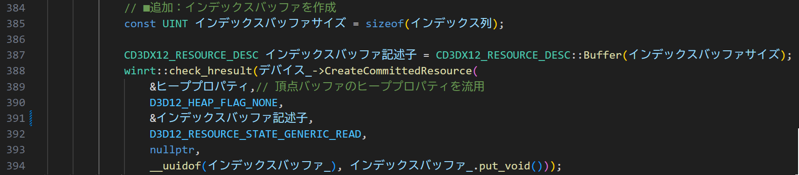
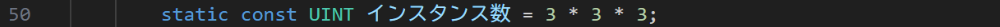

■はじめに
今回は複数のオブジェクトを描画します。 複数のオブジェクトを描画する方法はいろいろありますが、今回は、インスタンシングを用います。 また、インデックスバッファーを導入していなかったので、2ポリゴンを使った四角形を描画します。
ソースコードは、GitHubに上がっているものを見てもらえればと思います。
■今回の流れ
今回はポリゴンをたくさん表示します。 三角形のポリゴンを組み合わせたメッシュ（今回は四角形）を描画するのに、 標準的に使われているインデックスバッファーを導入します。
また、四角形の板を上下左右手前奥に3個ずつ配置します。 同じメッシュを複数表示するには、インスタンシングが使えます。 インスタンス毎にワールド行列を定義して、インスタンス毎に異なる位置・向きに配置します。
今回のプログラムの前回からの変更点は次の図で太字にした部分です。 全く新しい部分は、インデックスバッファーの導入になります。
■ インデックスバッファーによる描画
メッシュの設計
今回は、四角形のメッシュを描画します。
四角形は、2つの三角形で構成されているので、頂点が6個必要になります。
しかし、頂点の座標は、4つの頂点で十分です。
頂点の座標を4つだけ用意して、インデックスバッファーを使って、どの頂点を使うかを指定します。
インデックスバッファーで扱う情報は、頂点のインデックス情報です。
頂点データの何番目を使ってポリゴンを描画するのかということをしています。
三角形のポリゴンを何個か（今回は3つ）表示するのですが、頂点データの何番目の頂点を使うのかということを3つずつ指定して三角形の描画でつかう頂点を指定します。
そのため、インデックスバッファーは、2つの三角形を描画するのに、3個のインデックスを持ちます。
描画する三角形の頂点の並びは時計回りでしています。この設定は変えることもできますが、今回はそのままにします。
[Application.cpp]
このメッシュを構成する頂点データは次のようになります。
[Application.cpp]
今回の頂点データは、位置情報と色で構成します。
[Application.h]
頂点レイアウトは、次の形になります。
[Application.cpp]
インデックスバッファーの導入
インデックスバッファーは頂点バッファーと似た感じで使います
格納した情報を管理するのに、ID3D12Resourceインターフェイスのリソース(インデックスバッファ_)を使います。
[Application.h]
インデックスバッファーは、頂点バッファーと同じように、CreateCommittedResourceメソッドを使って生成します。
主な引数は、インデックスバッファー記述子で指定されるデータサイズになります。
あとは、頂点バッファーと同じ内容の引数になります。
[Application.cpp]

インデックスバッファーの初期化は、マップされたCPUがアクセスできるメモリにデータをコピーすることで行います。
マップされたメモリは、ID3D12ResourceのMapメソッドを使って取得します。
マップされたメモリに、インデックスバッファーのデータをコピーします。
[Application.cpp]
インデックスバッファビュー
インデックスバッファーを使うためには、インデックスバッファービューを作成する必要があります。 インデックスバッファービューは、D3D12_INDEX_BUFFER_VIEW構造体を使って定義します。
[Application.h]
インデックスバッファービューは、構造体にGPUでのアドレスと、インデックスの型・サイズを指定すれば使えます。
[Application.cpp]
インデックスバッファーを使った描画
描画コマンドの変更が必要になります。
先ずは、IASetIndexBufferメソッドを使って、インデックスバッファーの指定を追加します。
また、描画コマンド自体も、DrawIndexedInstancedメソッドに切り替える必要があります。
DrawIndexedInstancedメソッドの最初の引数は、描画する頂点のインデックス数になります。
また、その後に「インスタンス数」という値を入れています。これは、同じメッシュを何個描画するかという値です。
今回は、縦横奥で3つずつの27個の四角形を描画するので、インデックス数は6（2つの三角形で6個の頂点）で、インスタンス数は27になります。
[Application.h]

[Application.cpp]
■ インスタンシングでの描画
シェーダー
インスタンシングを使ったシェーダーでは、頂点シェーダーの引数でインスタンスを区別するための情報を受け取ることができます。
「SV_InstanceID」というセマンティクスを使って、インスタンスのIDを受け取ります。
このIDは0から始まるインスタンスの通し番号で、インスタンス毎に異なる値が入ります。
今回は、この値を使って、インスタンス毎に異なるワールド行列「matWorld[]」を指定します。
[shaders.hlsl]
インスタンス毎に異なる行列は、定数バッファーで管理します。 今回は、定数バッファーをオブジェクト毎に変化しないビュー射影行列と、 オブジェクト毎に変化するワールド行列に分けて管理します。
register キーワードを使ったリソース バインディングという方法を使って、 CPU側で定数バッファーを区別できるようにします。
定数バッファーは、b#という形式の仮想レジスタとしてバインドします。 シェーダーリソースは、T#、サンプラーはS#という形式でバインドします。
この表記は構造体に似ていますが、まとめた塊に名前はついていないので、直接変数名でアクセスします。
[shaders.hlsl]
その他の変更点としては、今回はピクセルシェーダーでは、頂点シェーダーから受け取った色を直接出力します。
[shaders.hlsl]
ピクセルシェーダーに対応して、頂点シェーダーからピクセルシェーダーに受け渡すデータの構造体も変更します。
[shaders.hlsl]

シェーダーに渡す定数データ
シェーダープログラムで定数バッファーを別々で関するのに対応して、C++側でも定数バッファーを分けて管理します。
今回は、ビュー射影行列を管理する定数バッファー(シーン定数バッファー)と、ワールド行列を管理する定数バッファー(オブジェクト定数バッファー)の2つの構造体に分けます。
構造体は256バイトのアライメントである必要があるので、使われていない部分をchar型の配列で埋めておきます。
[Application.h]
[Application.h]
ぞれぞれのデータをGPUからアクセスできるように、ID3D12Resourceインターフェイスのリソースとして管理します。
[Application.h]
シーン定数バッファーは今までに使ってきた定数バッファーと変わりません。
また、実行中に変化しないので、生成した直後にMapして初期化します。
[Application.cpp]
オブジェクト定数バッファーもCreateCommittedResourceメソッドで生成します。
[Application.cpp]
こちらは、毎フレーム更新するので、Mapして書き込むためのポインターを用意します。
仮の値で初期化しますが、毎フレーム更新します。
[Application.cpp]
ワールド行列は、描画の直前で更新します。
XMMatrixRotation関数を使って回転行列を作成するとともに、
XMMatrixTranslation関数を使って、位置を指定します。
縦横前後に3つずつ配置します。
作成した行列は、オブジェクト定数バッファーのポインターを使って書き込みます。

ルートシグネチャ
シェーダーに渡す定数バッファーを使うために、ルートシグネチャを変更します。
今回は、シーン定数バッファーとオブジェクト定数バッファーの2つの定数バッファーを使います。
それぞれの定数バッファーは、b0とb1というレジスタに割り当てるので、それぞれに対応した定数バッファービューを用意します。
また、テクスチャは使わずに、ピクセルシェーダーでは特に定数を必要としないので、ルートパラメーターは1つだけにします。
リソースのバインディングは、b0にシーン定数バッファー、b1にオブジェクト定数バッファーを割り当てましたが、
それらは、デスクリプターレンジを使って、ルートパラメータに割り当てます。
定数バッファービューを作るコードはまだ説明していません。
それらは、定数バッファーを生成した後に、定数バッファービューを作成することができます。
[Application.cpp]
オブジェクト定数バッファービューのヒープハンドルは、そのアドレスをCBVの大きさだけずらすことで、 シーン定数バッファービューの後ろに配置します。
[Application.cpp]

作成した定数バッファービューは、オブジェクトヒープを通してデスクリプターヒープの作成に使われます。
[Application.cpp]
あとは、ディスクリプターレンジCBVで2つ作って、ルートシグネチャに登録します。
[Application.cpp]
あとは、定数バッファービューを格納したディスクリプターヒープのハンドルをディスクリプターテーブルに登録して、GPUのメモリをCPUからアクセスできるようにします。
[Application.cpp]
■ その他
カメラ
実際にオブジェクトを表示したら画面からはみ出たので、カメラの位置を少し後ろにずらしています(zの値を小さくしています)。
[Application.cpp]

■ さいごに
インデックスバッファーは描画の基本的な考え方の1つで、 これで描画の基本的な考え方は、ほぼ網羅できたように思います。